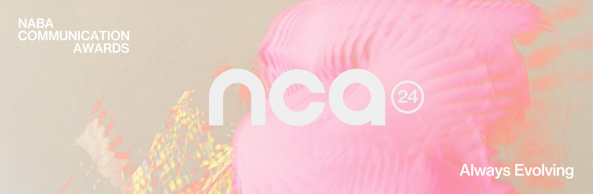
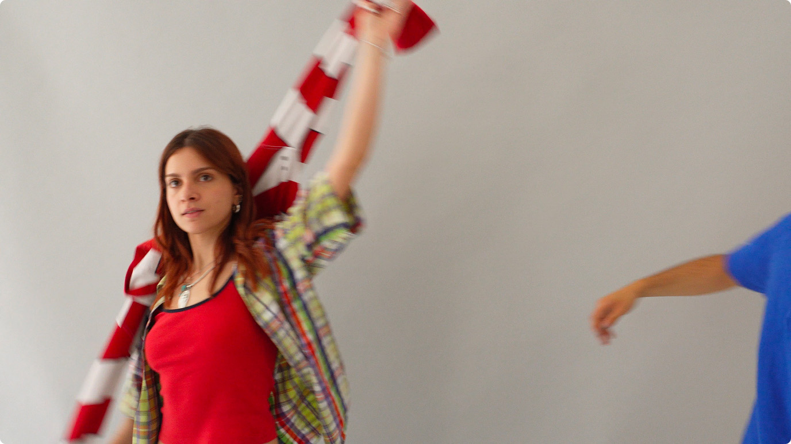
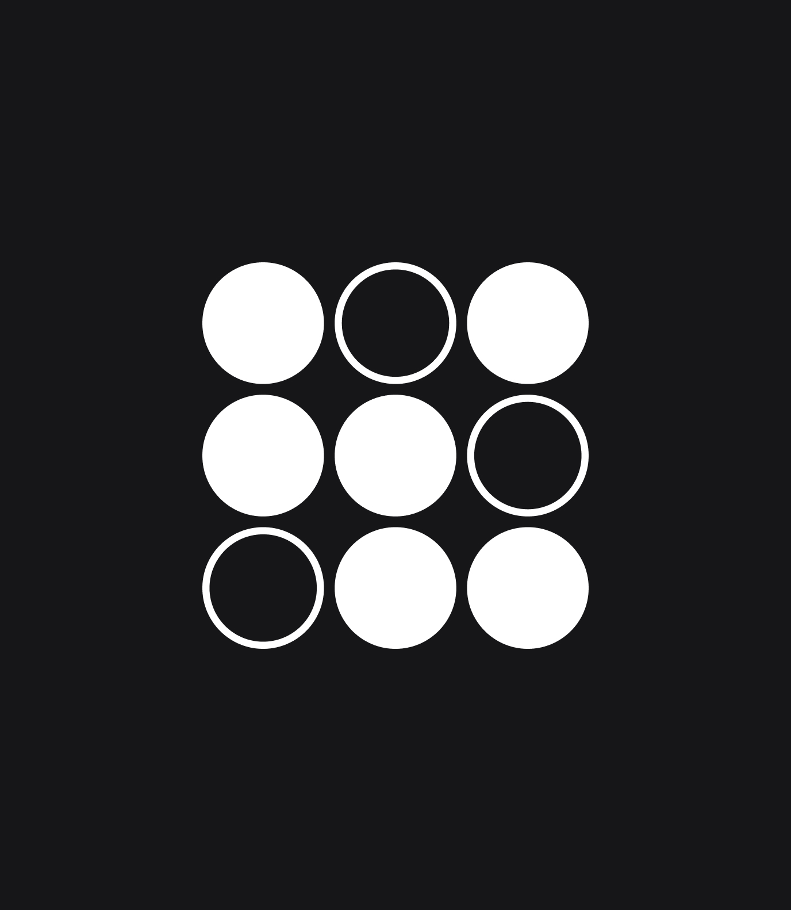
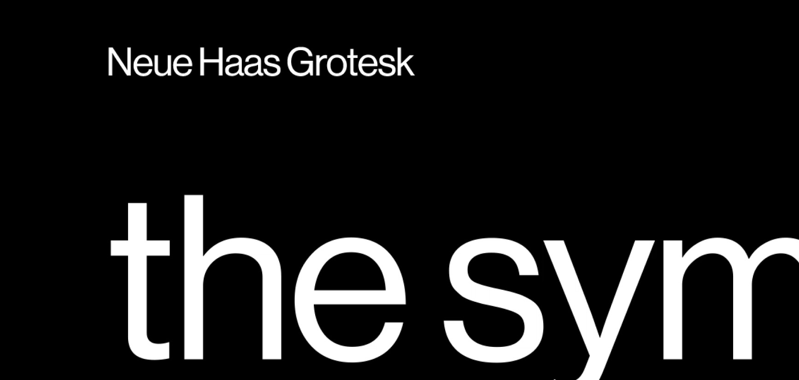
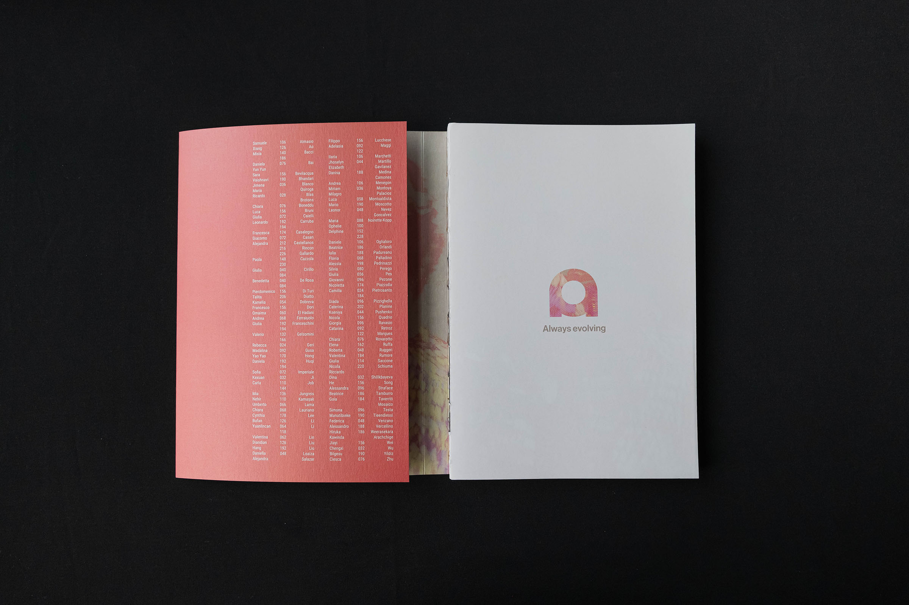
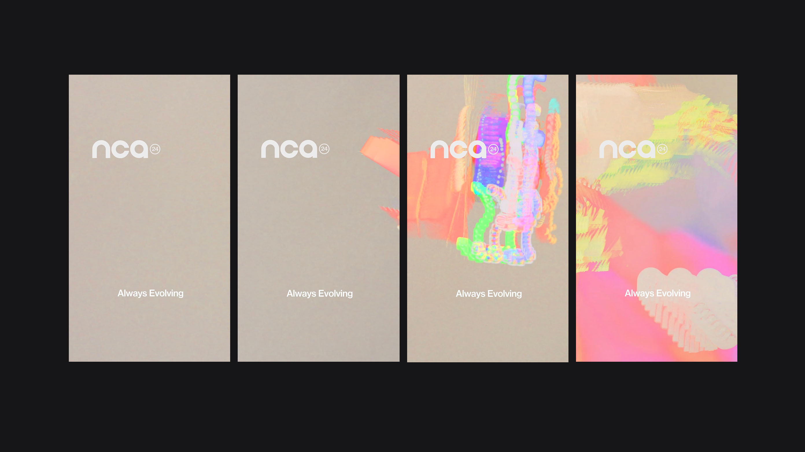
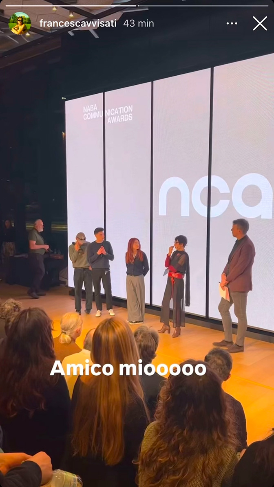

NABA Communication Awards
Il progetto
NABA Communication Awards sono il concorso annuale con cui NABA celebra i migliori progetti di comunicazione e graphic design realizzati dai suoi studenti. Per l’edizione abbiamo sviluppato un’identità visiva capace di raccontare le 12 categorie premiate, traducendole in altrettanti visual coordinati all’interno di un unico sistema.
Il progetto nasce dal concept “Always Evolving”: l’idea che la formazione non sia un percorso lineare, ma un processo di trasformazione continua. Entriamo in accademia con ambizioni, riferimenti e un’immagine di ciò che vorremmo diventare; durante il percorso, però, nuove competenze, esperienze e contaminazioni modificano progressivamente il nostro modo di pensare e progettare. Siamo quindi costantemente in movimento, mai completamente definiti e mai abbastanza fermi da essere perfettamente a fuoco.
Questa idea prende forma in un’identità costruita intorno al movimento. Il logo nasce da un modulo circolare che richiama la ciclicità di un percorso senza un vero punto di arrivo: un sistema che cambia, si adatta e continua a evolvere.
Per la comunicazione abbiamo scelto di introdurre un linguaggio prevalentemente fotografico, distaccandoci dalle edizioni precedenti. Ogni immagine interpreta gesti e azioni legati alle diverse discipline, utilizzando lunghe esposizioni, sfocature e scie luminose per rendere visibile il movimento e suggerire una trasformazione ancora in corso. All’interno di questo flusso, il trofeo rappresenta invece un momento di sospensione. La sua forma volutamente non definita cristallizza per un istante qualcosa che, per natura, continua a cambiare: il momento in cui un progetto viene riconosciuto, prima che il percorso riprenda la sua evoluzione.















